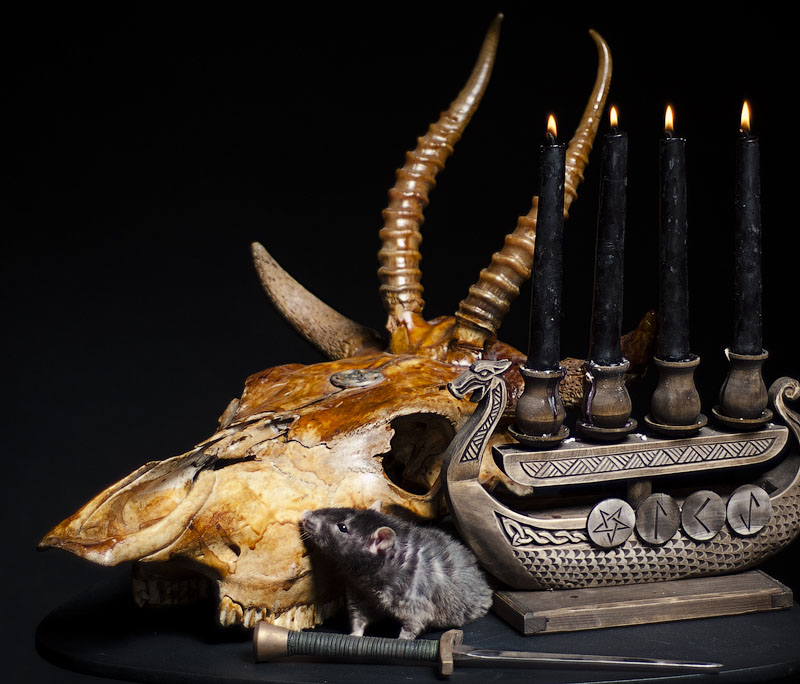

Warrax
Ad usum externum Liber VII:11:
Об использовании эрзацев при ритуальной работе
Скажите, стоит ли в ритуалах использовать не восковые, а парафиновые свечи? Можно ли использовать сувенирные кинжал и череп?
Кратко на тему стандартных ритуальных принадлежностей см. "Сатанинскую Азбуку", раздел "Практика", тема 04 "Инструменты и оформление".
Важно понимать, зачем всё это надо. Собственно говоря, объяснения сводятся к двум вариантам: религиозно-маразматическому и психологическому. В первом случае считается, что есть некие демоны и проч., которые вот просто обязаны явиться, если всё сделать точь-в-точь, как написано в древних гримуарах (то, что "рецепты" друг другу противоречат, это мелочи). Во втором случае главное — это собственный настрой. Обращаю внимание, что во втором случае безразлично, есть ли сущности "на самом деле" или они являются лишь психилогическими объектами.
Так вот, с одной стороны, если вы можете настраиваться без подручных предметов, то они вам и не нужны. С другой стороны, они добавляют эстетики и позволяют легче и "глубже" настроиться. Таким образом, надо просто судить по своим ощущениям, насколько замена "пафосной классики" подходит именно вам. Скажем, ритуальным ножом для получения крови пользоваться, наверное, очень труЪ, вот только я что-то сомневаюсь в умении большинства, гм, эзотериков затачивать нож до бритвенной остроты, а также в умении его аккуратного использования — нужно-то несколько капель, а не руку располосовать. Так что сейчас очень многие используют лезвия от бритвы, что тоже надо делать аккуратно. Да хоть скарификатор купите, если вас это не коробит.
Помнится, как-то в прошлом тысячелетии отмечали чей-то день рождения, захотели провести ритуал, а в квартире ничего из инструментов не было. Так свечи были парафиновые, натёртые пеплом от Библии (серым, понятно), вместо Чаши — хрустальная салатница с пивом... И ничего, нормально прокатило. Но, обращаю внимание, это — скорее церемония, чем серьёзная оккультная работа, там надо построже.
Если в общем виде, то правило простое: не надо слишком заморачиваться, но не должно быть профанации. Скажем, всякие мантии пошивать не обязательно (но если вы чувствуете потребность, то надо), но при этом одежда должна быть чёрной. Парафиновые свечи использовать можно без проблем, тут важен не столько воск, сколько желательна прокраска по объёму, а не только поверхностная. Кинжал можно использовать сувенирный, такой, который вам нравится, но при этом не стоит его заодно использовать для нарезки колбасы. А вот сувенирный череп — не стоит, это уже явная профанация. Как-то я это даже на НТВ объяснял, но нормальную передачу так и не сделали, потом отрывок использовали совершенно в другом контексте.
При этом возможны модификации "по настроению" — иногда заморочиться вплоть до зажигания правильных свечей от природного огня (лучиной. а не спичкой или зажигалкой), а иногда и сувенирный ширпотреб, окрашенный по поверхности, сойдёт. При этом, опять же, до профанации доводить не надо: скажем, при работе на природе можно потом посидеть вокруг ритуального костра, но картошку в нём печь не стоит.
Что касается конкретно черепов, то тут вопрос запутанный, просто изложу свою точку зрения.
Использование человеческого (вопрос "где взять" я не обсуждаю) сопряжено, скажем так, с биографией бывшего владельца. Скажем, лично свой череп я бы себе на алтарь поставил, но это затруднительно по техническим причинам. А череп какого-нибудь бомжа или там копанина не пойми кого и в соотвествующем состоянии — лично мне не подходит по эстетическим соображениям. "Не радует".
Лично мной используется вот такой конструкт:

Это коровий череп, добытый из скотомогильника, на который приделаны рога сайгака, итого получается такой нестандарт с четырьмя рогами — некоторые, видя в первый раз, удивляются на тему "это кто?!". Всё покрыто лаком, а на лбу приклеена простенькая железная пентаграмма. Просто и эстетично.
Следует отметить, что времена меняются, и могут быть изменения в используемых материалах и эстетике. Скажем, т.н. Чёрная месса для современного восприятия не является чем-то сатанинским (кого сейчас удивишь обнажённой девушкой?), да и направленность именно "против", а не "за", вторичное антихристианство. Что показательно, подобное (дьяволопоклонники и проч.) многое используют до сих пор, хотя сам ЛаВей давал материал как исторический, а вот о том, чтобы кто-либо проводил "Die Elektrische Vorspiele", я как-то не слышал. Хотя XXI веку это соответсивует куда больше. Хотя бы в варианте газоразрядных светильников: красиво, пафосно и очень вписывается в сатанинскую экстетику, явно обозначая прогресс. Вот на примере старой доброй песни W.A.S.P.:
Ну и последнее. Конечно, гораздо приятнее, если у вас будет стационарный алтарь. А ещё лучше — чтобы он стоял в отдельной ритуальной комнате. Которая будет находиться в вашем персональном храме Сатаны, который будет занимать городской квартал...
Если же реально подходить к делу, то не забывайте, что алтарь — это тоже лишь инструмент, а свободного пространства в современных условиях хватает далеко не у всех. Так что можно и накрывать тумбочку чёрной материей, например, или сделать разборный столик, да и вообще можно расчистить обычный стол (но скатерти с рюшечками не рекомендуются) или расположиться на полу.
Повторюсь: главное, чтобы лично вас всё это устраивало и при этом не было профанцией (если вас устраивает профанация, то это отдельный разговор, и сатанистом вы точно не являетесь).
17.06.2016